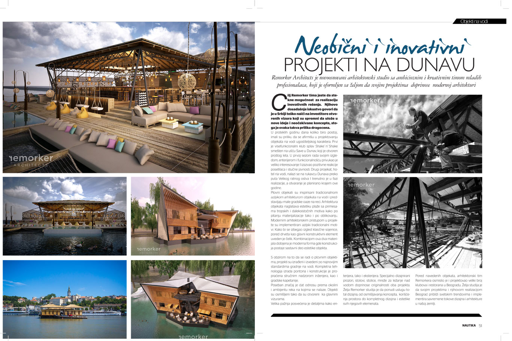

Nautika Publication
Neobični i inovativni PROJEKTI NA DUNAVU
Remorker Architects je novoosnovani arhitektonski studio sa ambicioznim i kreativnim timom mladih profesionalaca, koji je oformljen sa željom da svojim projektima doprinose modernoj arhitekturi
Cilj Remorker tima jeste da stekne mogućnost za realizaciju inovativnih rešenja. Njihovo dosadašnje iskustvo govori da je u Srbiji teško naići na investitore otvorenih vizura koji su spremni da ulože u nove ideje i neočekivane koncepte, stoga je svaka takva prilika dragocena.
U proteklih godinu dana koliko biro postoji, imali su priliku da se afirmišu u projektovanju objekata na vodi ugostiteljskog karaktera. Prvi je visefunkcionalni klub splav Shake`n`Shake smešten na ušću Save u Dunav, koji je otvoren prošlog leta. U prvoj sezoni rada svojim izgledom, enterijerom i funkcionalnošću privukao je veliko interesovanje I izazvao pozitivne reakcije posetilaca i stučne javnosti. Drugi projekat, hotel na vodi, nalazi se na rukavcu Dunava preko puta Velikog ratnog ostva I trenutno je u fazi realizacije, a otvaranje je planirano krajem ove godine.
Plovni objekati su inspirisani tradicionalnom azijskom arhitekturom objekata na vodi i predstavljaju male gradske oaze na reci. Arhitektura objekata naglašava estetiku plaže sa primesama tropskih i dalekoistočnih motiva kako po pitanju materijalizacije tako i po oblikovanju. Modernim arhitektonskim pristupom u projekte su implementirani azijski tradicionalni motivi. Kako bi se izbegao izgled klasične sojenice, pored drveta kao glavni konstruktivni element uveden je čelik. Kombinacijom ova dva materijala dobijena je moderna forma gde konstrukcija postaje sastavni deo estetike objekta.
S obzirom na to da se radi o plovnim objektima, projekti su izrađeni i izvedeni po najnovijim standardima gradnje na vodi. Kompletna tehnologija izrada pontona i konstrukcije je propraćena stručnim nadzorom inženjera, kao i gradske kapetanije.
Poseban značaj je dat odnosu prema okolini i ambijentu reka na kojima se nalaze. Objekti su osmišljeni tako da su otvoreni ka glavnim vizurama. Velika pažnja posvećena je detaljima kako enterijera, tako i eksterijera. Specijalno dizajnirani prozori, stolovi, stolice, mreže za ležanje nad vodom doprinose originalnosti oba projekta. Želja Remorker studija je da ponudi uslugu total dizajna, od osmišljavanja koncepta, korišćenja prostora do kompletnog dizajna i estetike svih njegovih elemenata. Pored navedenih objekata, arhitektonski tim Remorkera osmislio je i projektovao veliki broj klubova i restorana u Beogradu. Želja studija je da svojim projektima i njihovom realizacijom Beograd približi svetskim trendovima i implementira savremene tokove dizajna i arhitekture u našoj zemlji.
{kind=link}